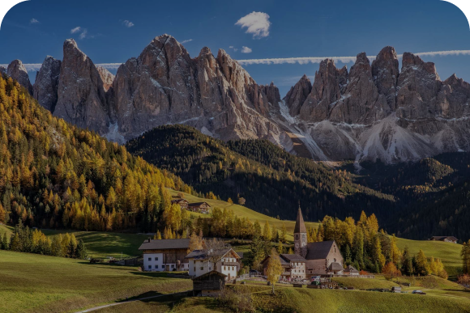

Доломитовые Альпы в Южном Тироле – красивейшее архитектурное сооружение в мире. И ведь они действительно были построены. Это горы из окаменелых водорослей и коралловых рифов. Миллионы лет назад в районе Доломитовых Альп плескались воды бескрайнего тропического моря Тетис. Восхитительные виды белоснежных вершин в розоватой утренней дымке, сочные зеленые луга, зимние горнолыжные курорты, свежий сыр и ветчина… Тем, кому хотелось бы романтики в горной альпийской деревне, получат ее сполна. А еще Вас наверняка очарует сказочное озеро Брайес и окружающая его долина Прагса в Южном Тироле, а также интернациональный горный музей Месснера, расположенный на самой вершине Монте Рите, на высоте 2181 м над уровнем моря.
Д оломитовые Альпы